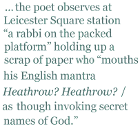

Maggie Butt’s is a first full collection that clearly has been in the making for quite a few years. This shows in two ways: firstly, because the poems are beautifully executed and thoughtfully formed; and secondly because they deal with experiences which have clearly accumulated in the poet’s mind over a considerable period. The very first poem in the book entitled “Stonemason” shows a sculptural approach that reflects in the form:
I carve a head, shaping a nostril for breath,
though nobody will see it, high above the nave.
I am uncomfortable and scared of heights
but careful in each chisel-chip
tongue caught between my teeth.
I have to confess that when reviewing poetry I look for a flair for imagery, a capacity for empathy and a quality of thoughtfulness in a poet. A couple of lines like “shrugging on cold air at the/ stage door like an overcoat.” or “lizards, cocktail-bright and quick”, betoken the first gift; while the following, imagining “A fat man in football shirt” off to a football match with his son, shows the second talent:
A dream fulfilled — me and the boy —
his first match, great initiation
into the soaring hope and dark despair
it means to be a man.
While both second and third talents, so to speak, appear in the poem “Heathrow? Heathrow?” in which the poet observes at LeicesterSquare station “a rabbi on the packed platform” holding up a scrap of paper who “mouths his English mantra Heathrow? Heathrow?/ as though invoking secret names of God.” The people “surge around him like a tide” but completely ignore him.The poet notices him, though he is “beyond my reach” as she is in a tube train, but with thoughtful insight she writes of those on the platform who might help the man but don’t, “This isn’t prejudice. This is its guilty twin, indifference.”
In the poem “e-mail”, humour emerges out of exasperation as “the junk mail blossomed like a fungus/ a daily chore of skimming off the scum/ to find the meaty matter.” And the poet says:
This must be what it’s like for God.
“You have six billion unread messages.”
He isn’t dead; he’s just logged off.
The one other quality that I look for in poems is rhythm, and its variation music. In Maggie Butt’s poetry there is a cautiously-structured quiet music. It is a music wholly appropriate to a poet of alert observation coupled with an unfractured decency of thought that is not so common in poetry today. By “decency”, of course, I mean what George Orwell meant by the term, not Alvarez’s “gentility principle”, but that sense of cool proportion that presages wisdom. Finally, I should mention that Lipstick contains a wider range of personal experience, beautifully metamorphosed, than this review may suggest.
William Oxley was born in Manchester. A poet and philosopher, he has also worked as accountant. part-time gardener, and actor. He divides his time between London and South Devon. His poems have been published in
The New York Times and
The Formalist, The Scotsman, New Statesman, The London Magazine, Stand, The Independent, The Spectator and
The Observer. Following the publication of a number of his works on the Continent in the ’80s and ’90s, he was dubbed “Britain’s first Europoet”. Among his numerous books of poetry have been
Collected Longer Poems (Salzburg University Press, 1994), and
Reclaiming the Lyre: New and Selected Poems (Rockingham Press, 2001). A former member of the General Council of the Poetry Society, he is consultant editor of
Acumen magazine. In 1999 he published his autobiography
No Accounting for Paradise (Rockingham Press). A study of his poetry,
The Romantic Imagination, came out in 2005 from Poetry Salzburg. His work is featured on various websites, including Anne Stewart’s prestigious
www.poetrypf.co.uk.